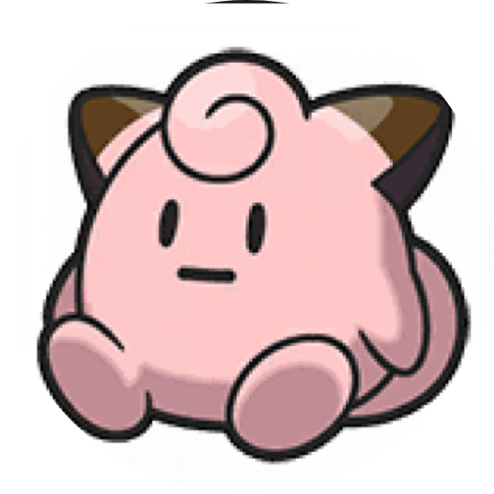
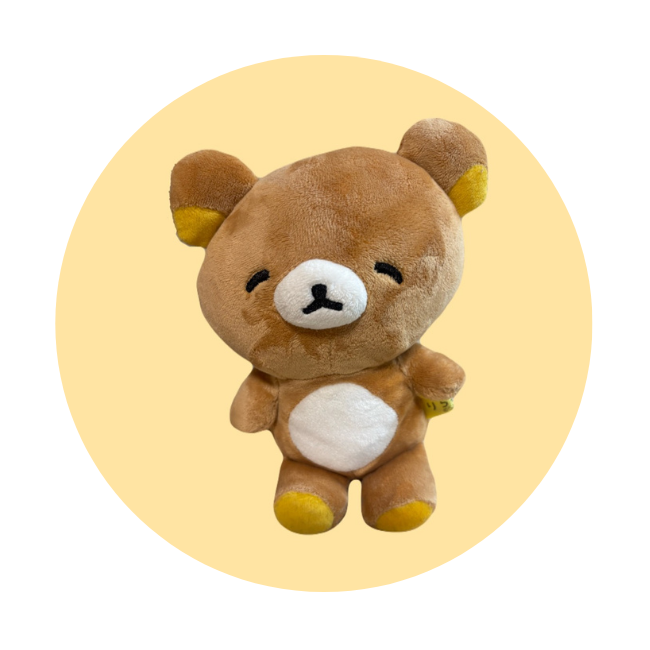

ガシャ活支援アプリ
Gashama
「欲しい」を逃さない。「被り」を、無駄にしない。
Gashama（ガシャマ）は、ガシャポンの在庫状況をリアルタイムに地図で共有し、 ユーザー同士でダブった景品を交換できるコミュニティアプリです。
こんな「ガシャ活あるある」、ありませんか？
探し回って空振り
欲しい景品の情報がなく、何店舗も回ったのに売り切れだった。
被り景品の行き場がない
同じ景品が何個も出てしまい、収納にも困るし手放す手段もない。
在庫情報がバラバラ
SNSで探しても情報が古かったり、正確な設置場所が分からない。
Gashamaでできること
在庫の「見える化」と、ユーザー同士の「交換」で、ガシャ活をもっと楽しく効率的に。
リアルタイム在庫マップ
近くのガシャポン設置店舗の在庫状況を地図上で確認。今どこに何が残っているかが一目で分かります。
ユーザー間トレード掲示板
被った景品を出品し、欲しい人と交換。コンプリートまでの最後の一歩を後押しします。
投稿でみんなに貢献
見つけた在庫を投稿してコミュニティに共有。新鮮な情報がどんどん集まる仕組みです。
ポイントシステム（開発中）
在庫投稿でポイントを獲得し、自分のトレード投稿の露出を上げられる仕組みを設計中です。
使い方はシンプルに3ステップ
-
1
探す
マップで近くの店舗の在庫を確認。欲しい景品がある場所をすぐに見つけられます。
-
2
共有する
実際に見つけた在庫や、被ってしまった景品を投稿してコミュニティに共有します。
-
3
交換する
欲しい景品を持つユーザーとつながり、トレードでコレクションを完成させます。
実際の画面
操作の様子はデモ動画でご覧いただけます。
技術スタック
ハッカソンで4人チームによって開発。要件定義からリリースまでのプロセスも大切にしています。
チーム体制
要件定義はマインドマップとユーザーストーリーを組み合わせて整理。Issue/PRフローなど、なぜその工程が必要かを言語化したチーム開発プロセスのもとで、4人体制で進めています。
しでりょう
PM・クライアントエンジニア
ぽん
バックエンド・クライアントエンジニア

なつるん
クライアントエンジニア・デザイナー

ちょす
クライアントエンジニア・デザイナー